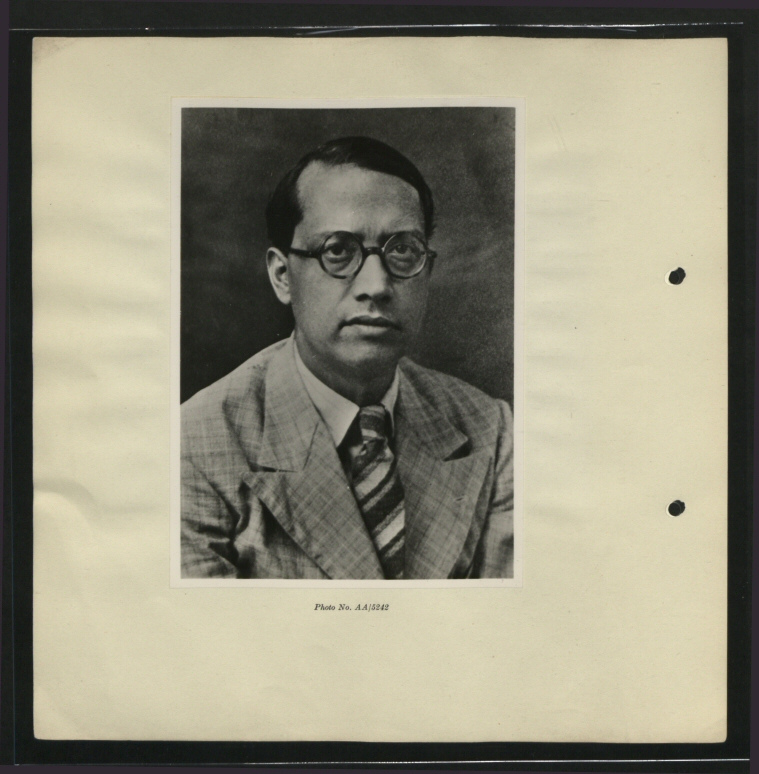

Sukumar Sen
1899–1963

India’s first Chief Election Commissioner, who ran the republic’s first general election
Why it's here
I wanted to add a profile of Sukumar Sen, India’s first election commissioner. The context here is the debates about the special intensive revision, SIR, and all the debates about disenfranchisement. I think it’s important to know how far we have come. It’s important to know how radical and revolutionary our past elections were, and how monumentally challenging they were, and yet how far we have come: how we started at a place where we protected the sacred right of people to vote and express their democratic choice at all costs. B.
This note, in my voice 1:12
Written by Claude from Ramachandra Guha’s India After Gandhi, the Election Commission of India’s Report on the First General Elections in India 1951-52, Volume I, the Press Trust of India’s “India’s first voter fulfils his duty again”, and Wikipedia’s “Sukumar Sen (civil servant)”.
The man who had to make it happen
Guha
India set up an Election Commission two years after independence, and in March 1950 Sukumar Sen became its chief. He came to it from the post of chief secretary of West Bengal, having joined the Indian Civil Service in 1921 and served in a number of districts and as a judge. Born in 1899, he had studied at Presidency College and at London University, which gave him a gold medal in mathematics. He left no memoirs and few papers, and Guha regrets how little is known of him.
Guha
Jawaharlal Nehru hoped the country could vote as early as the spring of 1951. Sen, who would have to run the election, asked the prime minister to wait. The polls were set for the first months of 1952, with some outlying districts to vote before that.
Every adult, by name
Guha; ECI
About 85 per cent of the electorate could not read or write, and every voter had to be found, named and registered before anything else could be done. Of about 180 million adults, the rolls held 173 million names, in every state except Jammu and Kashmir. About 45 per cent of the names were women’s.
Guha; ECI
In several northern states many women would not give their own names to strangers, and asked to be entered as somebody’s mother or somebody’s wife. Sen would not accept it, and directed his officials to put the women’s names on the rolls in place of the descriptions. The Commission’s rule was that a name is an essential part of a voter’s identity, and a woman who refused to give hers was not to be registered. Bihar was given an extra month to correct its rolls and used it well; Rajasthan was given the same, and the response there was poor.
Guha; ECI
In the end about 2.8 million women were struck off the rolls, out of nearly 80 million women voters, practically all of them in Bihar, Uttar Pradesh, Madhya Bharat, Rajasthan and Vindhya Pradesh. Sen thought the uproar over their omission a good thing: it might help the prejudice vanish before the next elections, when the women could be put back on the rolls under their own names. When his report on the election went to press, it recorded that no state was having any difficulty enrolling women by their proper names.
“Curious senseless relic of the past”
Boxes, symbols and ink
Guha
There were about 4,500 seats to fill, some 500 in Parliament and the rest in the provincial assemblies. The Commission set up 224,000 polling booths and supplied them with 2 million steel ballot boxes, which took 8,200 tons of steel to make. It took 56,000 presiding officers, another 280,000 helpers and 224,000 policemen to run the vote.
Guha
Since most voters could not read a party’s name, each party was given a picture from daily life: a pair of bullocks, a hut, an elephant, an earthenware lamp. Each polling station had a separate box for every party, marked with its symbol, so that a voter only had to drop the ballot paper into the right one. To stop anyone voting in another person’s name, Indian scientists developed an ink that stayed on the finger for a week, and 389,816 phials of it were used.
Guha
Through 1951 the Commission explained the vote with a documentary shown in more than 3,000 cinemas, and with programmes on All-India Radio about the constitution, adult franchise, the rolls and how to vote.
The first general election, in numbers
- 173 million
- names on the electoral rollsECI
- 85 per cent
- of the electorate could not read or writeGuha
- 224,000
- polling boothsGuha
- 2 million
- steel ballot boxesGuha
- 389,816
- phials of indelible inkGuha
- 2.8 million
- women struck off the rolls for want of their own namesGuha
The first votes
ECI
The first constituencies to vote were Chini and Pangi in the hills of Himachal Pradesh, where polling had to be finished before the snow that usually falls in early November. Polling there began on 25 October 1951; most of the remaining states voted in January 1952. Even so, it took about a week to carry the ballot boxes down to Chamba and Kasumpti to be counted.
PTI
Shyam Saran Negi of Kalpa, in Kinnaur, is recognised as the country’s first voter, from the poll of 25 October 1951. At ninety-seven he was still voting, at a booth in the school from which he had retired after 23 years.
ECI
In Lahaul and Spiti the Commission had warned the state government in June 1951 to hold an early poll, and the government let the matter slide. Its polling stations were then placed outside the snow-bound area, far from the voters’ homes, and the voters could not reach them. The Commission’s report called it a virtual denial of the right to vote to 6,348 voters, and said it very much regretted it.
Afterwards
ECI; Wikipedia
Sen signed the preface to that report in February 1955. It was late, he wrote, partly because he had spent more than a year abroad after the elections, serving in the Sudan as chairman of its International Electoral Commission. He was among the first people awarded the Padma Bhushan. He ran the second general election too, in 1957, and served until December 1958. He died in 1963.
A life in dates
- 1899Born
- 1921Joins the Indian Civil Service
- 1950Chief Election Commissioner, from March
- 1951The first votes, at Chini and Pangi, on 25 October
- 1952Most of the country votes, in January
- 1955Signs the report on the first election
- 1957Runs the second general election
- 1958Leaves office in December
- 1963Dies
Further reading
- India After Gandhi: The History of the World’s Largest DemocracyRamachandra Guha. Picador, 2007.
- How India Became Democratic: Citizenship and the Making of the Universal FranchiseOrnit Shani. Cambridge University Press, 2017.
- Report on the First General Elections in India 1951-52Election Commission of India. Government of India Press, 1955.
- Leap of Faith: Journey of Indian ElectionsElection Commission of India.
Written from
- GuhaRamachandra Guha, India After Gandhi, Ecco/HarperCollins, 2007. An extract reproduced with the author’s permission at The Caravan, 2014. Where we read it
- ECIElection Commission of India, Report on the First General Elections in India 1951-52, Volume I, Government of India Press, 1955. A scanned copy in Down To Earth’s library. Where we read it
- PTIPress Trust of India, “India’s first voter fulfils his duty again”, The Morung Express, 2014. Where we read it
- WikipediaWikipedia, “Sukumar Sen (civil servant)”, 2026. Where we read it
Every sentence above cites these sources. Code found each cited passage word for word in the text we fetched and checked every figure against it; a second model checked each sentence against its passages, and anything it could not confirm was left out. The editor read and approved the profile before it was published.